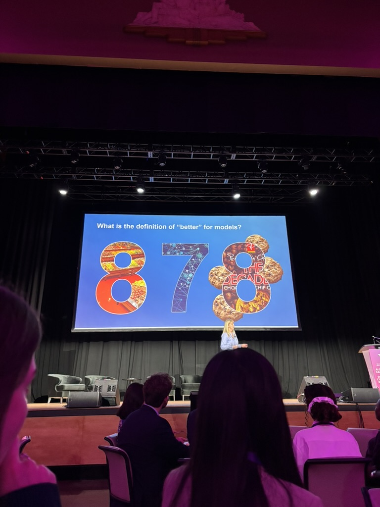
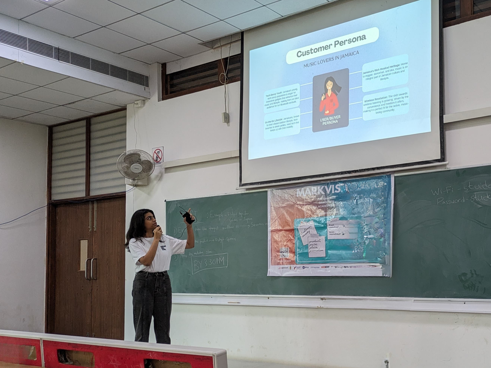

I find the problems worth solving, then use whatever it takes to solve them
Scroll
Recent Work
Understanding what users actually want before designing anything
Built an ML framework that designers can use to figure out which aesthetic principles their specific users care about. Instead of applying generic design rules, test what actually matters to your audience. Made it open-source so designers can validate decisions with data instead of assumptions.

Neural network for income prediction
Predicted income from US Census data by systematically testing what actually improved performance versus what just looked sophisticated. Ensembled 5 cross-validation models instead of using one, optimized decision thresholds for class imbalance, and stripped out features that added noise. The process of figuring out what not to do taught me more than the final accuracy.
Beyond Work




